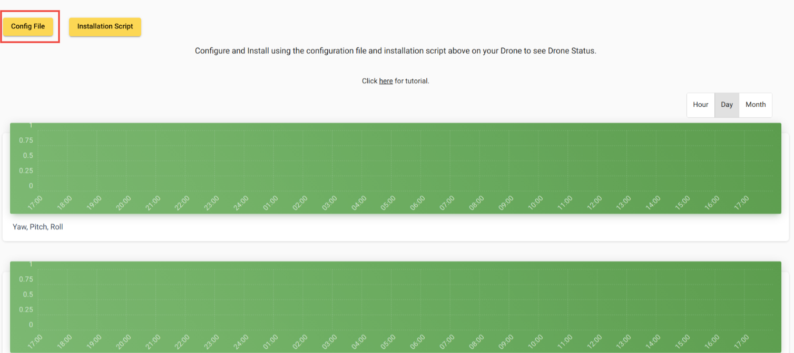
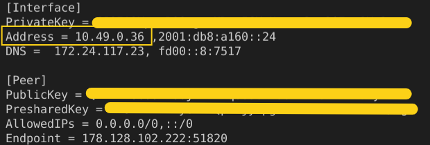
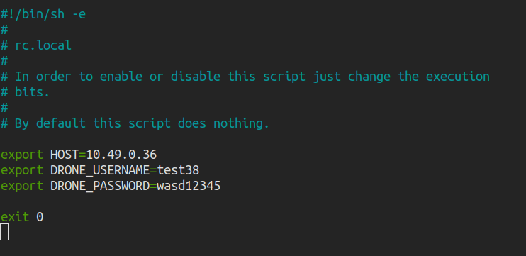
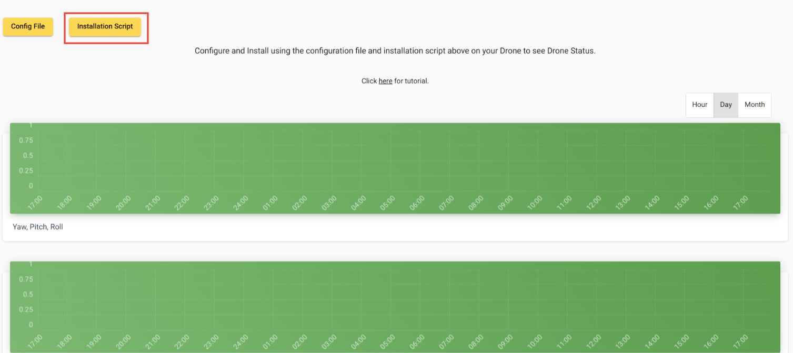

<div class="main-content">
    <div class="container-fluid">
        <div class="row">
            <div class="col-md-12">
                <div class="card">
                    <div class="card-header card-header-danger">
                        <h4 class="card-title">Tutorial</h4>
                        <!-- <p class="card-category">Complete your profile</p> -->
                    </div>
                    <div class="card-body">
                        <p class="h3"><b>Configure wwan0 interface</b></p>
                        <p class="h4">1. Create new file with wwan0 as filename in /etc/network/interfaces.d/</p>
                        <p class="h4">Sample configuration for wwan0:</p>
                        <pre>
                            <code>
                                auto wwan0
                                iface wwan0 inet manual
                                    pre-up uhubctl -a off -l 1-1 -p 2
                                    pre-up /bin/sleep 1
                                    pre-up uhubctl -a on -l 1-1 -p 2
                                    pre-up /bin/sleep 30
                                    pre-up ifconfig wwan0 down
                                    pre-up for _ in $(seq 1 10); do /usr/bin/test -c /dev/cdc-wdm0 && break; /bin/sleep 1; done
                                    pre-up for _ in $(seq 1 10); do /usr/bin/qmicli -d /dev/cdc-wdm0 --nas-get-signal-strength && break; /bin/sleep 1; done
                                    pre-up /usr/local/bin/qmi-network-raw /dev/cdc-wdm0 start
                                    pre-up udhcpc -i wwan0
                                    post-down /usr/local/bin/qmi-network-raw /dev/cdc-wdm0 stop
                            </code>
                          </pre>

                          <br>

                          <p class="h3"><b>Setting up VPN</b></p>
                          <p class="h4">1. Download VPN configuration file</p>
                          
                          <p class="h4">2. Install Wireguard in companion computer using this command</p>
                          <pre>
                            <code>
                                sudo apt install wireguard
                            </code>
                          </pre>
                          <p class="h4">3. Copy the configuration file to /etc/wireguard/wg0.conf in companion computer</p>
                          <p class="h4">To start the VPN, run</p>
                          <pre>
                            <code>
                                wg-quick up wg0
                            </code>
                          </pre>

                          <br>

                          <p class="h3"><b>Declaring environment variable</b></p>
                          <p class="h4">1. Set HOST to VPN ip address from the VPN configuration file</p>
                          
                          <p class="h4">2. Set DRONE_USERNAME to the username of drone when registering the drone</p>
                          <p class="h4">3. Set DRONE_PASSWORD to the password of drone when registering the drone</p>
                          <pre>
                            <code>
                                export HOST=ip_address
                                export DRONE_USERNAME=username
                                export DRONE_PASSWORD=password
                            </code>
                          </pre>
                          <p class="h4">4. To export the environment variable during every startup, write the command in /etc/rc.local</p>
                          
                          <br>

                          <p class="h3"><b>Installing scripts</b></p>
                          <p class="h4">1. Download Installation script</p>
                          
                          <p class="h4">2. Copy it to the companion computer and extract it using the command:</p>
                          <pre>
                            <code>
                                tar -xvf install.tar.xz
                            </code>
                          </pre>
                          <p class="h4">3. Change directory into the extracted directory</p>
                          <pre>
                            <code>
                                cd install
                            </code>
                          </pre>
                          <p class="h4">4. Run the installation script</p>
                          <pre>
                            <code>
                                sudo sh install.sh
                            </code>
                          </pre>

                          <br>

                          <p class="h3"><b>Modifying serial interface of flight controller</b></p>
                          <p class="h4">The default serial interface used is /dev/ttyAMA0. If you want to change it add -c option in  /bin/fyp_drone/server.sh </p>
                          <pre>
                              <code>
                                  python /bin/fyp_drone/server.py -H $HOST -c /dev/ttyUSB0
                              </code>
                          </pre>

                          <br>

                          <p class="h3"><b>Disabling video streaming</b></p>
                          <p class="h4">Comment out the line</p>
                          <pre>
                              <code>
                                  sh /bin/fyp_drone/start_camera.sh &
                              </code>
                          </pre>
                          <p class="h4">in /bin/fyp_drone/start_drone.sh</p>
                    </div>
                </div>
            </div>
        </div>
    </div>
  </div>
  